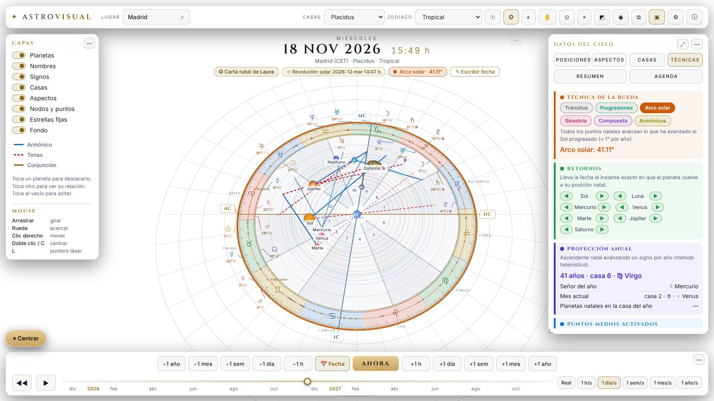
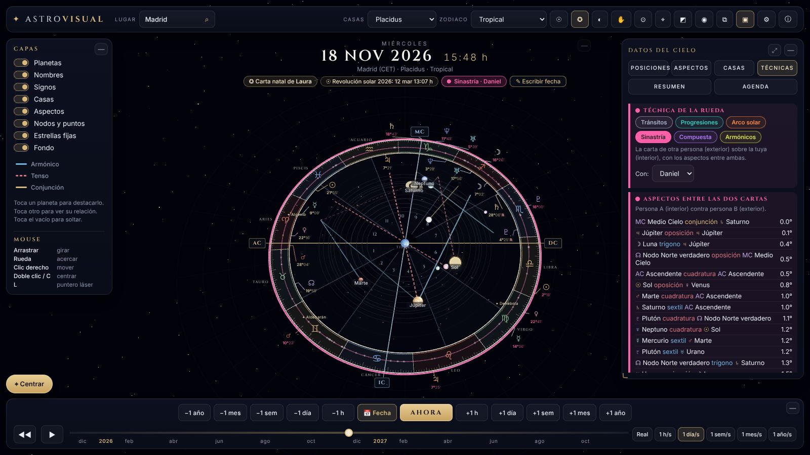
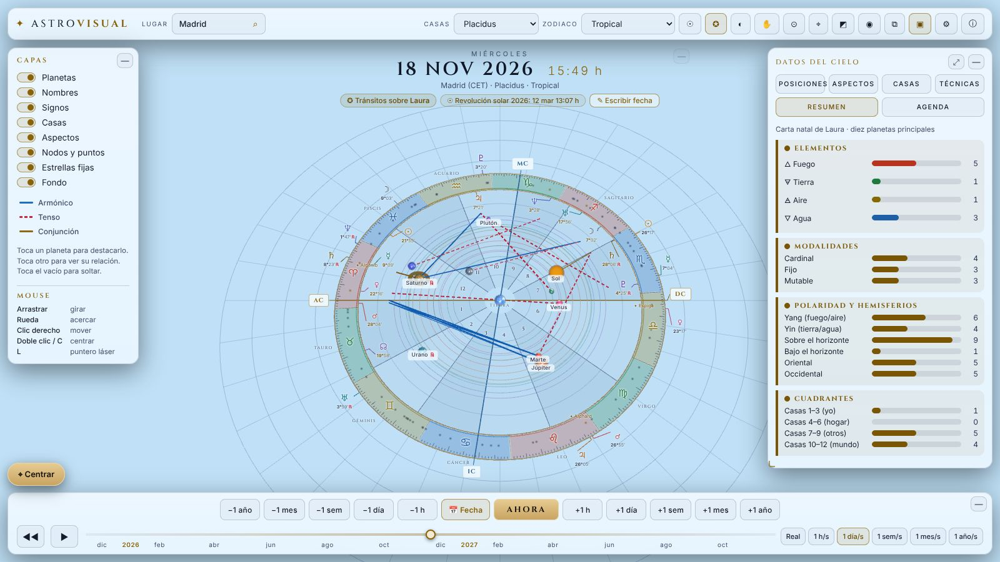

La rueda astrológica en 3D
para tus videos de predicción
Viaja por el tiempo, mira los tránsitos moverse sobre la carta natal y explícalo con una rueda clara, bella y exacta. Hecho para astrólogos que enseñan en YouTube y en vivo.
Para Windows 10 y 11 · sin tarjeta para la prueba · pago único, sin suscripción
Al abrir el instalador, Windows mostrará un aviso azul. Es normal.
Aparece con cualquier programa nuevo de un autor independiente. No significa que tenga un problema: solo hay que dar dos clics.
Más información
Ejecutar de todos modos
Mira en 45 segundos cómo se usa
Todo lo que usa un astrólogo, en una sola rueda
Cada técnica tiene su propio color, así tus espectadores entienden de un vistazo qué estás mostrando.
Tránsitos
El cielo de cualquier fecha y hora sobre la carta natal de tu cliente, con aspectos aplicativos y separativos.
Progresiones secundarias
Un día por año, calculado al instante para la fecha que elijas.
Arco solar
Todos los puntos natales avanzan con el Sol progresado.
Sinastría
Dos cartas, una sobre otra, con la lista de aspectos entre ambas.
Carta compuesta
La carta de la relación por puntos medios.
Armónicos
Cualquier armónico, del 2 al 144, con atajos al 5, 7, 9 y 12.
Retornos
Salta al instante exacto del retorno de Sol, Luna, Mercurio, Venus, Marte, Júpiter o Saturno.
Profecciones
Señor del año y del mes, con la casa y el signo activados.
Puntos medios
Dial de 90° con los puntos medios activados.
Partes árabes
Doce partes clásicas con su fórmula, diurnas y nocturnas.
Paralelos y contraparalelos
Aspectos de declinación con orbe de 1°.
Resumen de la carta
Elementos, modalidades, hemisferios, dignidades y planetas dominantes.
Pensado para grabar y presentar
Gira la rueda con libertad en cualquier dirección, abre la rueda sola en otra ventana para compartir pantalla, usa el puntero láser y el modo presentación. Exporta imagen o PDF con fecha y tabla de aspectos. Modo privacidad para ocultar el nombre del cliente.
Tres fondos a elegir: noche, blanco o azul celeste. Las letras, líneas y planetas se ajustan para verse nítidos en cada uno.


Sinastría y resumen en el mismo panel
Elige a la otra persona entre tus cartas guardadas y ve los aspectos entre las dos cartas, con orbes. En la pestaña «Resumen» tienes elementos, modalidades y dignidades con colores propios.

Exactitud que puedes comprobar
AstroVisual calcula con las efemérides JPL DE440 de la NASA, las mismas que usan los observatorios. Comparamos 602 fechas entre 1900 y 2100 con una referencia astrológica profesional: los planetas coinciden por debajo de 3 segundos de arco, y el Ascendente y las casas por debajo de 4 segundos. Los nodos y Lilith verdaderos son puntos calculados con distintos modelos; ahí puede haber diferencias de hasta unos minutos de arco entre programas, y es normal.
Planetas
Por debajo de 3″ frente a la referencia (Sol, Mercurio a Plutón menos de 1″ en la mayoría).
Casas y ángulos
Placidus, Koch, Regiomontanus, signos enteros y más. Ascendente y MC con precisión de segundos.
Zodiaco
Tropical y sidéreo (Lahiri, Fagan-Bradley, Raman, KP), y vista heliocéntrica.
Un solo pago. Sin suscripción.
Prueba 14 días con todo activado. Si te gusta, activas tu licencia con la clave que llega a tu correo.
- Licencia de por vida, sin caducidad
- Actualizaciones incluidas
- Hasta 2 equipos con la misma clave
- Todas las técnicas y los 3 fondos
- Pago seguro con tarjeta
Preguntas frecuentes
¿Cómo se descarga e instala?
Pulsa «Descargar», abre el archivo AstroVisual-Setup.exe que se baja a tu carpeta Descargas y sigue los pasos. Son unos 27 MB. Al abrirlo por primera vez empieza tu prueba de 14 días con todo activado.
¿Windows me muestra un aviso azul al instalar?
Sí, es normal en programas nuevos de autores independientes. Pulsa «Más información» y luego «Ejecutar de todos modos». El aviso aparece porque el instalador aún no tiene la firma de pago de Microsoft, no porque tenga algún problema. El código no contiene anuncios ni recopila datos de tus clientes.
¿Las cartas de mis clientes se envían a internet?
No. Las cartas natales se guardan solo en tu equipo. Las efemérides necesarias se descargan una vez por siglo y se guardan en tu equipo.
¿Necesito internet?
Para activar la licencia y descargar siglos de efemérides que aún no tengas. El resto funciona sin conexión.
¿Hay versión para Mac o móvil?
Por ahora solo Windows 10 y 11.
¿Cuántos equipos puedo usar?
Dos equipos con la misma clave. Puedes liberar uno desde el programa para pasar la licencia a otro.
¿Cómo contacto con soporte?
Escribe a hola@oumrama.com con tu duda, y te respondemos lo antes posible.
¿Y si no me convence?
Tienes 14 días de prueba con todas las funciones antes de pagar.
¿Puedo usarlo en mis videos de YouTube?
Sí. Las imágenes y grabaciones que hagas con el programa son tuyas.